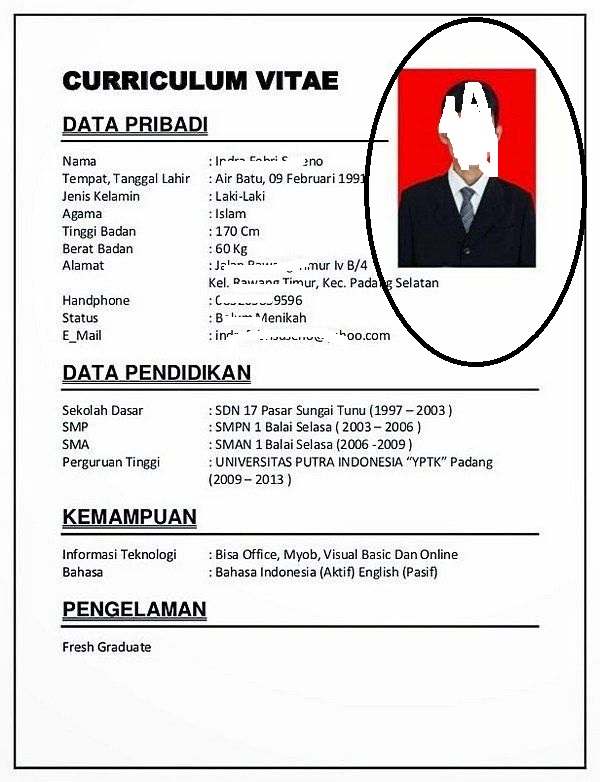

Materi WD
UTS
Soal
Soal UTS dapat dilihat di halaman soal UTS.
Pembahasan
Pembahasan UTS secara lengkap dapat di lihat pada halaman pembahasan UTS.
Tugas pasca UTS
Bacalah penjelasan pembahasan UTS, unduh dan cobalah ubah file html dan css yang menjadi studi kasus jawaban UTS tersebut.
Masing-masing mahasiswa wajib memberikan minimal dua pertanyaan yang belum pernah ditanyakan sebelumnya mengenai kedua file
tersebut melaui email ke dhimas at lepisi.ac.id dengan subjek WDA20TUG5. Jika pertanyaan
yang diajukan ternyata sudah pernah diajukan, silakan kirimkan pertanyaan lain hingga kuota pertanyaan mahasiswa terpenuhi.
Pertanyaan yang dikirim serta jawaban saya akan saya update pada halaman ini per hari.
Pertanyaan yang diajukan adalah pertanyaan yang memang sulit untuk Anda mengerti. Jika penjelasan yang didapat dari google sudah cukup jelas, maka pertanyaan tersebut tidak perlu diajukan melalui email. Batas maksimal mengirim pertanyaan adalah sebelum UAS.
Mahasiswa diwajibkan membaca buku HTML & CSS Design and Build Websites oleh Jon Duckett yang telah diberikan pada awal pertemuan, buku tersebut juga dapat digunakan sebagai bahan bertanya.
Daftar pertanyaan:
Dervinas (2019804315)
-
Jelaskan perbedaan cara pengoperasikan subscript dan supercript?
subscript dan superscript pada html masing-masing dibuat menggunakan tag
<sub>dan<sup> -
Bagaimana cara mengoperasikan nested list?
Nested list adalah list di dalam list, biasanya digunakan untuk daftar yang isinya memiliki sub daftar lain, contohnya bisa kamu lihat di sini.
Firman Waruwu (2019804318)
-
Bagaimana coding untuk memposisikan FOTO pada CV kita
seperti pada gambar berikut pak tanpa mempengaruhi texs yang ada di
sebelahnya. dan codingnya di letakan di mana, apakah di css atau html.
trimakasih.
Perlu diingat bahwa file html berisi informasi dan struktur dari sebuah halaman web, bukan menentukan tampilannya. Semua koding yang mempengaruhi tampilan, sebaiknya diletakkan di file css. Cara paling mudah untuk mendapatkan layout seperti gambar adalah dengan menggunakan property
floatyang tutorialnya bisa dibaca di css-tricks.
Tandy Awang (2019804332)
-
Apakah dapat membuat 2 halaman dalam satu 1 halaman html?
Jika yang dimaksud adalah menampilkan lebih dari satu halaman pada sebuah halaman html, ada sebuah elemen bernama
<iframe>yang bisa mengambil isi dari sebuah halaman web. Jadi bisa saja kamu membuat sebuah halaman web berisi beberapa iframe yang masing-masing menampilkan halaman web yang berbeda. Bacaan lanjut di laman developer mozilla. -
Berapa maksimal jumlah heading yang dapat dimasukan?
jumlah heading yang dapat dibuat di html tidak diatur batasnya, namun heading di html memiliki enam tingkat.
Studi Kasus
To be added ..
UAS
To be added ..